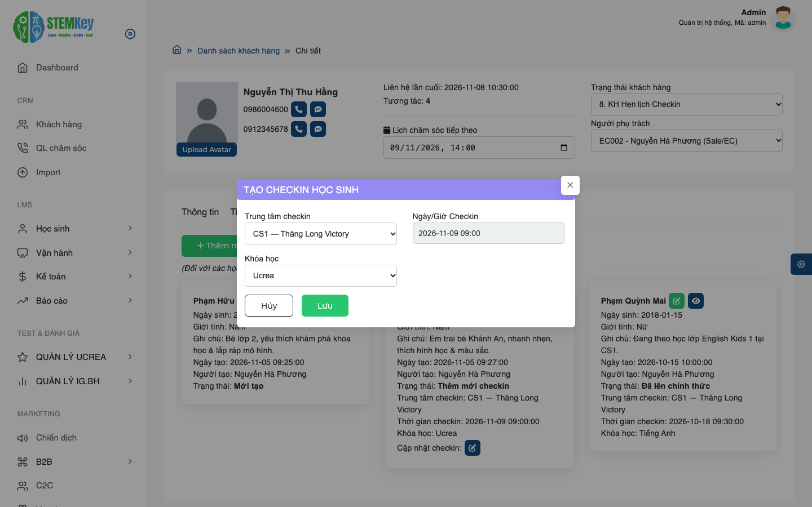

0986004600 (Nguồn: Marketing Facebook Ads)
STK000069)2. Bé Phạm Hữu An Khánh (
STK000077)
0936889911) — Bé Đỗ Gia Khiêm (đến trực tiếp quầy Lễ tân)
Sale/EC: Nguyễn Hà Phương (EC002) | CM: Lê Thu Trang (CM003)
Đăng nhập Cổng thông tin STEMKey ERP
Tất cả bộ phậnhttps://stemkey.congnghegiaoduc.com, nhập Mã nhân viên (ví dụ: EC002, CM003, admin) và Mật khẩu được cấp rồi nhấn Đăng nhập.

Màn hình đăng nhập với tài khoản nhân viên tư vấn tuyển sinh (Mã NV: EC002).
Sale Lên Data Khách hàng & Ghi nhận Chăm sóc (CRM)
Sale (EC) / Telesales / Marketing- Sử dụng Bộ lọc nhanh theo Từ khóa (Tên phụ huynh, SĐT), Lịch chăm sóc tiếp theo, Trạng thái khách hàng (Level 1 → 12), Nguồn khách hàng hoặc Người phụ trách.
- Theo dõi các tab công việc hàng ngày:
Tất cả,Chưa chăm sóc,Lịch chăm sóc trong ngày,KH quá hạn xử lý,Ticket chưa xử lý. - Chuyển đổi linh hoạt giữa 2 chế độ hiển thị ở góc phải: Tổng quan và Chi tiết (hiển thị ngay lịch sử cuộc gọi và danh sách các con ngay trên bảng).

Danh sách khách hàng hiển thị rõ SĐT, tên học sinh trực thuộc, lịch sử cuộc gọi gần nhất và nhân viên quản lý.
/crm/parent/add) để nhập thông tin khách hàng tiềm năng (hoặc vào CRM → Import nếu tải lên từ file Excel):
- Danh xưng (*) & Họ tên (*): Ví dụ: Bà — Nguyễn Thị Thu Hằng.
- Điện thoại (*): Nhập số điện thoại chính (ví dụ:
0986004600). Hệ thống tự động kiểm tra trùng lặp ngay khi nhập xong. - Người phụ trách (*) & Nguồn (*): Chọn Sale phụ trách (EC002 - Nguyễn Hà Phương), Nguồn (Marketing → Facebook Fanpage STEMKey) và Trạng thái khách hàng.
- Thông tin học sinh đi kèm (nếu biết trước): Có thể nhập luôn Họ tên học sinh, Ngày sinh, Giới tính, Trường học ngay ở nửa dưới biểu mẫu.

Điền đầy đủ thông tin phụ huynh Nguyễn Thị Thu Hằng (0986004600) và thông tin bé Phạm Hữu Khánh An.
/crm/parent/{id}/detail):
- Tại tab Chăm sóc, bấm nút + Thêm mới chăm sóc để ghi lại kết quả cuộc gọi, tin nhắn Zalo/SMS, nhu cầu của phụ huynh và đặt Lịch chăm sóc tiếp theo.
- Cập nhật Trạng thái khách hàng ở góc trên bên phải phù hợp với tiến độ thực tế (ví dụ: chuyển sang
8. KH Hẹn lịch Checkinsau khi phụ huynh đồng ý đưa con đến cơ sở).

Theo dõi toàn bộ nhật ký tương tác (Điện thoại, Zalo, SMS), trạng thái cuộc gọi và lịch hẹn chăm sóc tiếp theo.
Quản lý Học sinh & Sale Đặt lịch Check-in từ Hồ sơ Khách hàng
Sale (EC) / Tư vấn Tuyển sinh- Nếu phụ huynh có thêm bé chưa được tạo hồ sơ, bấm nút + Thêm mới học sinh.
- Nhập Họ tên học sinh, Ngày sinh, Giới tính và Ghi chú (trường lớp, sở thích, tính cách của bé) rồi nhấn Lưu.
- Học sinh vừa tạo sẽ có trạng thái ban đầu là Mới tạo.

Nhập thông tin bé Phạm Hữu Khánh An trực thuộc hồ sơ phụ huynh Nguyễn Thị Thu Hằng.
Học sinh này:
- Trên thẻ của học sinh đang ở trạng thái Mới tạo (hoặc Đã kết thúc), bấm vào nút biểu tượng mũi tên định vị màu đỏ () cạnh tên học sinh.
- Cửa sổ TẠO CHECKIN HỌC SINH hiện ra:
- Trung tâm checkin: Chọn cơ sở khách sẽ đến (ví dụ: CS1 — Thăng Long Victory).
- Ngày/Giờ Checkin: Thời gian hẹn khách đến cơ sở.
- Khóa học: Chọn chương trình học sinh dự kiến test/trải nghiệm (ví dụ: Ucrea, Bright I.G).
- Nhấn Lưu: Trạng thái trên thẻ học sinh lập tức chuyển thành Thêm mới checkin và dữ liệu được đẩy thẳng sang danh sách
LMS → Học sinh → Checkincủa cơ sở để Lễ tân/Giáo vụ chuẩn bị đón tiếp. - Nếu khách xin đổi giờ hẹn hoặc đổi khóa học trước khi đến, Sale chỉ cần bấm nút Cập nhật checkin () ngay dưới thẻ học sinh.

Minh họa trực quan 3 trạng thái thẻ học sinh: (1) "Mới tạo" có nút đỏ đặt lịch Check-in, (2) "Thêm mới checkin" có nút sửa lịch hẹn, (3) "Đã lên chính thức" có nút xem hồ sơ LMS.

Sale chọn Trung tâm checkin (CS1 — Thăng Long Victory) và Khóa học (Ucrea) rồi bấm Lưu để đẩy lịch hẹn xuống cơ sở.
Tiếp đón & Check-in Học sinh tại Trung tâm
Lễ tân / Giáo vụ (CM) / Sale tại cơ sởKhi phụ huynh đưa học sinh đến quầy Lễ tân cơ sở, nhân viên KHÔNG mặc định bấm "Thêm mới Checkin" ngay mà cần phân biệt rõ 2 trường hợp dưới đây để tránh tạo trùng dữ liệu khách hàng:
Sale ĐÃ tạo Check-in từ Tab Học sinh (CRM)
Khách hàng đã được Sale chăm sóc từ trước và đã bấm đặt lịch Check-in tại tab Học sinh trong Chi tiết khách hàng (như hướng dẫn ở Chặng 2).
- Tuyệt đối KHÔNG bấm nút "+ Thêm mới Checkin" để nhập lại từ đầu.
-
Vào
LMS → Học sinh → Checkin, gõ Tên hoặc SĐT phụ huynh vào ô Tìm kiếm để lọc học sinh đã có sẵn trong danh sách (đang ở trạng thái Chưa đến checkin). - Khi khách đến và đồng ý nhập học/học thử, chỉ cần Xác nhận Check-in / Bấm nút "Lên chính thức" ngay trên dòng của học sinh đó.
Sale CHƯA lên Data trên hệ thống
Phụ huynh trực tiếp đến quầy Lễ tân tìm hiểu (khách Walk-in) hoặc chưa từng có hồ sơ trong CRM / chưa được tạo lịch Check-in trước.
-
Tại màn hình
LMS → Học sinh → Checkin, bấm nút + Thêm mới Checkin ở góc trên bên phải (URL:/lms/checkin/add). - Nhập đồng thời Thông tin Phụ huynh + Thông tin Học sinh + Trung tâm checkin & Khóa học trên cùng 1 biểu mẫu.
-
Khi bấm Thêm mới (có chọn Trung tâm checkin), hệ thống tự động tạo hồ sơ CRM, ghi nhận lượt Check-in và chuyển thẳng học sinh lên Chính thức (cấp mã
STK...ngay lập tức).
- Truy cập
LMS→Học sinh→Checkin(URL:/lms/checkin). - Tại bộ lọc, gõ SĐT phụ huynh (ví dụ:
0986004600) hoặc tên bé (Phạm Hữu Khánh An) rồi bấm Tìm kiếm. - Kiểm tra thông tin trên dòng kết quả: Học sinh đã hiển thị sẵn kèm tên Phụ huynh, SĐT, Nguồn, EC phụ trách, Cơ sở checkin và Khóa học với trạng thái Chưa đến checkin (hoặc Đã checkin).
- Xác nhận học sinh đến cơ sở & Chuyển lên chính thức:
- Ghi nhận thời gian học sinh thực tế có mặt tại cơ sở và kết quả buổi trải nghiệm / làm bài test đầu vào tại cột Ghi chú.
- Tại cột Thao tác, nhấn nút màu xanh Lên chính thức → Chọn Đồng ý ở hộp thoại xác nhận.
- Hệ thống tự động cập nhật xác nhận thời gian đến checkin (nếu trước đó đang ở trạng thái Chưa đến checkin), đồng thời kích hoạt hồ sơ Học viên chính thức và chuyển hướng sang trang Chi tiết học sinh LMS.

Học sinh Phạm Hữu Khánh An (do Sale đặt lịch từ CRM) đã nằm sẵn trong danh sách — Lễ tân/Sale chỉ cần kiểm tra và bấm nút xanh để xác nhận.

Ghi nhận chính xác thời điểm phụ huynh đưa bé đến quầy Lễ tân và ghi chú bàn giao cho Giáo viên làm bài Diagnostic Test.
- Tại màn hình
LMS→Học sinh→Checkin, bấm nút + Thêm mới Checkin ở góc phải trên cùng (URL:/lms/checkin/add). - Phần THÔNG TIN PHỤ HUYNH: Nhập Danh xưng (*), Họ tên (*) (ví dụ: Ông — Đỗ Quang Huy), Điện thoại (*) (
0936889911), Người phụ trách (*), Nguồn (*) (chọn Trung tâm → Khách Walk-in tại quầy Lễ tân) và Trạng thái (9. KH Đã đến Checkin). - Phần THÔNG TIN HỌC SINH:
- Nhập Họ tên học sinh (Đỗ Gia Khiêm), Ngày sinh, Giới tính, Trường học.
- Chọn Trung tâm checkin (CS1 — Thăng Long Victory) và Khóa học (Bright I.G). Nếu phụ huynh đi cùng 2 bé trở lên, bấm + Thêm học sinh để khai báo thêm.
- Nhấn nút Thêm mới: Hệ thống tự động khởi tạo đồng bộ cả 3 bản ghi (Phụ huynh CRM + Lượt Check-in + Hồ sơ Học sinh chính thức có mã
STK...).

Biểu mẫu nhập mới đồng thời Phụ huynh Đỗ Quang Huy và Học sinh Đỗ Gia Khiêm khi khách đến trực tiếp cơ sở mà Sale chưa lên data.
Quản lý Hồ sơ Học viên Chính thức & Mã định danh STK
Giáo vụ (CM) / Tư vấn Tuyển sinh (EC)- Hệ thống tự động sinh Mã học sinh duy nhất theo định dạng
STK+ 6 chữ số (ví dụ:STK000069,STK000077). Nhân viên có thể nhấp trực tiếp vào huy hiệu mãSTK...trên bảng để sao chép nhanh vào bộ nhớ tạm. - Tự động gán Trung tâm quản lý, EC phụ trách, EC Leader và Giám đốc trung tâm dựa theo người phụ trách hồ sơ Check-in.
- Trạng thái ban đầu của học sinh khi chưa xếp lớp sẽ hiển thị là
Chờ xếp lớp học thửhoặcChờ xếp lớp chính thức.

Màn hình quản lý học sinh LMS hiển thị Mã STK, thông tin phụ huynh, lớp đang theo học, EC/CM phụ trách và thanh tiến độ số buổi học.
Tạo Hợp đồng Nhập học & Thu Học phí
Sale (EC) / Kế toán / Thu ngânLMS → Vận hành → Nhập học → Nhấn nút + Thêm mới (URL: /lms/contracts/add):
- Cột trái — Thông tin học sinh:
- Chọn Trung tâm (*) trước để giới hạn phạm vi tìm kiếm (ví dụ: CS1 — Thăng Long Victory).
- Tại ô Chọn học sinh (*), gõ từ 3 ký tự trở lên (Tên học sinh, Mã
STK...hoặc SĐT phụ huynh) rồi chọn học sinh trong danh sách gợi ý. Toàn bộ thông tin Họ tên, Mã HS, Phụ huynh, SĐT, Địa chỉ, EC, EC Leader, Giám đốc TT sẽ tự động điền.
- Cột phải — Thông tin đăng ký học & Chính sách ưu đãi:
- Loại hợp đồng (*): Chọn
Học thử(nếu đăng ký gói trải nghiệm 0đ/ngắn hạn) hoặcChính thức(nếu mua gói khóa học tiêu chuẩn). - Khóa học & Gói học phí: Chọn khóa học (Ucrea, Bright I.G, Tiếng Anh...) và gói phí tương ứng (3 tháng, 6 tháng, 12 tháng, 24 tháng).
- Chính sách ưu đãi STEMKey 2026: Hệ thống tự động tính Học bổng theo kỳ hạn, quà tặng kèm, và cho phép tích chọn các ưu đãi cộng thêm: Giảm trừ anh chị em học cùng (-5%), Ưu đãi tặng thêm 10% (gói ≥ 6 tháng), Đăng ký nhóm 3 / Check-in, Khách hàng nội khu (-5%).
- Sách & Học liệu mua kèm (nếu có): Chọn bộ học liệu để gộp chung vào phiếu thu.
- Chọn Ngày dự kiến học và bấm Lưu để khởi tạo hợp đồng (mã dạng
C000085).
- Loại hợp đồng (*): Chọn

Tạo hợp đồng Chính thức gói 12 tháng Ucrea (96 buổi) cho bé Phạm Hữu An Khánh (STK000077) với đầy đủ ưu đãi học bổng, anh chị em ruột và cư dân nội khu.
Chưa đóng phí và xuất hiện trong phân hệ Kế toán:
- Vào
LMS→Kế toán→Chờ thu phí(URL:/lms/waitcharges). - Tìm hợp đồng của học sinh (ví dụ:
C000085— Số tiền còn phải đóng:16,380,000đ), bấm vào nút biểu tượng thanh toán ở cột Thao tác (hoặc nhấp vào mã hợp đồng). - Trong màn hình Thông tin thu phí: Nhập Số tiền thu, chọn Phương thức đóng phí (Tiền mặt, Chuyển khoản, Thẻ tín dụng), chọn Ngày thu phí và bấm Thêm phiếu thu.
- Kết quả sau khi thu phí:
- Nếu đóng đủ 100% học phí (Công nợ = 0đ): Hợp đồng tự động chuyển sang trạng thái Chờ xếp lớp chính thức.
- Nếu đóng một phần (Đặt cọc): Hợp đồng chuyển sang trạng thái Đặt cọc và hệ thống tự động quy đổi số buổi được phép học tương ứng với số tiền đã đóng.
- Xem lại lịch sử phiếu thu và in biên lai tại mục
LMS→Kế toán→Đã thu phí(URL:/lms/charges).

Kế toán kiểm tra các hợp đồng còn công nợ tại mục Kế toán → Chờ thu phí và bấm nút Thao tác để lập phiếu thu.
Xếp lớp cho Học viên (Enrolment)
Giáo vụ (CM) / Quản lý Đào tạo/lms/enrolments):
- Ở cột bên trái, chọn Trung tâm (*) (ví dụ: CS1 — Thăng Long Victory) và Khóa học (ví dụ: Ucrea).
- Cây thư mục cấp độ (ví dụ:
L1) sẽ hiển thị danh sách các lớp đang hoạt động. Nhấp vào tên lớp cần xếp (ví dụ:STM.04.U.21.Thứ 7-cn). - Khung Thông tin lớp học bên phải sẽ hiển thị chi tiết:
- Thời gian khóa học, Giáo viên đứng lớp, Ca học & Phòng học, CM quản lý lớp.
- Sĩ số hiện tại / Tối đa: Ví dụ
5/16(còn trống 11 chỗ). - Các thẻ lịch học trực quan bên dưới thể hiện các buổi Đã học và các buổi Sắp học.

Chọn lớp STM.04.U.21.Thứ 7-cn để kiểm tra sĩ số (5/16), lịch các buổi sắp học và danh sách học viên đang trong lớp.
- Nhấn nút + Thêm học sinh ở góc phải phía trên bảng danh sách học viên của lớp (lưu ý: lớp phải có gán CM quản lý và chưa vượt quá sĩ số tối đa).
- Trong cửa sổ THÊM HỌC SINH VÀO LỚP:
- Tích chọn ô vuông cạnh học sinh cần xếp lớp (ví dụ: bé Phạm Hữu An Khánh — STK000077).
- Tại cột Ngày bắt đầu học, chọn buổi học thực tế đầu tiên của bé từ danh sách các ngày có lịch học của lớp (ví dụ:
2026-11-14).
- Nhấn nút Thêm học sinh màu xanh lá: Hệ thống tự động khởi tạo toàn bộ lịch học cá nhân theo số buổi của hợp đồng, tính toán ngày kết thúc dự kiến và cập nhật trạng thái học viên sang Đang học chính thức.

Tích chọn học sinh Phạm Hữu An Khánh (STK000077), chọn Ngày bắt đầu học (2026-11-14) và bấm "Thêm học sinh".
Vận hành: Điểm danh Chuyên cần & Đăng ký Học bù
Giáo vụ (CM) / Giáo viên / Trợ giảngLMS → Vận hành → Điểm danh (URL: /lms/attendances):
- Chọn Trung tâm (*), Khóa học, Lớp học (ví dụ:
STM.04.U.21.Thứ 7-cn) và Chọn tháng (ví dụ:2026-11). - Bảng điểm danh hiển thị danh sách học viên theo hàng và các buổi học trong tháng theo cột. Tại mỗi ô buổi học, chọn trạng thái tương ứng:
Chưa điểm danh: Buổi học chưa diễn ra hoặc chưa chấm công.Đi học: Học sinh có mặt tham gia buổi học (hệ thống ghi nhận hoàn thành 1 buổi học).Học bù: Khi chọn trạng thái này, cửa sổ ĐĂNG KÝ HỌC BÙ sẽ tự động bật lên để chọn Lớp học bù và Buổi học bù tương đương cho học sinh.Đã học bù: Hệ thống tự động cập nhật sau khi học sinh hoàn thành buổi học bù tại bảng Đăng ký học bù bên dưới.

Giao diện điểm danh lớp STM.04.U.21.Thứ 7-cn tháng 11/2026 kèm bảng theo dõi trạng thái "Đăng ký học bù" ngay phía dưới.
Vận hành: Kiểm tra Đầu vào & Đánh giá Năng lực Định kỳ
Giáo viên / Chuyên môn Đào tạo / Giáo vụ- Khảo sát đầu vào (Diagnostic Test —
/lms/evaluations/igbh/diagnostic): Khởi tạo bài khảo sát năng lực chẩn đoán khi học sinh mới Check-in hoặc nhập học, chấm Điểm môn học + Điểm tư duy, tự động gán Level đề xuất (ví dụ:IG.BH Level 2,Ucrea L1) và xuất báo cáo PDF gửi phụ huynh. - Đánh giá Tuần (Weekly —
/lms/evaluations/igbh/weekly) & Đánh giá UCREA (/lms/evaluations/ucrea): Ghi nhận mức độ tiếp thu, kỹ năng tư duy và thái độ học tập của học viên sau từng chủ đề. - Đánh giá Cuối kỳ (Summative —
/lms/evaluations/igbh/summative) & Nhận xét chung (/lms/assessments): Tổng kết năng lực cuối khóa để xét duyệt lên cấp độ tiếp theo và phục vụ tư vấn tái phí.

Bảng tổng hợp kết quả bài kiểm tra đầu vào với Điểm môn học, Điểm tư duy, Tổng điểm, Level gán và nút Xem báo cáo PDF.
Vận hành: Quy đổi Khóa học / Gói phí (Exchange)
Giáo vụ (CM) / Kế toán- Truy cập
LMS→Vận hành→Quy đổi→ Bấm + Thêm mới (URL:/lms/exchange/add). - Chọn Trung tâm, tìm kiếm Học sinh và chọn Gói phí đích muốn quy đổi sang. Hệ thống tự động tính toán số phí còn lại và số buổi sau quy đổi một cách minh bạch.

Theo dõi lịch sử quy đổi từ gói Ucrea sang gói Bright I.G kèm số tiền và số buổi còn lại tương ứng.
Vận hành: Chuyển lớp & Chuyển Trung tâm
Giáo vụ (CM) / Giám đốc Cơ sởLMS → Vận hành → Chuyển lớp (URL: /lms/class_transfers):
- Bấm + Thêm mới khi học sinh muốn đổi lịch/ca học sang một lớp khác cùng cấp độ.
- Bấm + Thêm mới chuyển kỳ khi học sinh hoàn thành cấp độ hiện tại và chuyển lên lớp ở học kỳ/cấp độ cao hơn.
- Hệ thống tự động rút học sinh khỏi danh sách Lớp đi và cập nhật vào Lớp đến kể từ Ngày chuyển lớp được chọn, bảo toàn nguyên vẹn số buổi học còn lại.

Danh sách chuyển lớp hiển thị rõ Lớp đi, Lớp đến, Ngày chuyển hiệu lực và phân loại (Chuyển lớp / Chuyển kỳ).
- Vào
LMS→Vận hành→Chuyển trung tâm(URL:/lms/branch_transfers) → Nhấn + Thêm mới. - Chọn học sinh, chọn Trung tâm nhận và Ngày chuyển. Sau khi được phê duyệt, toàn bộ hồ sơ, hợp đồng và số buổi còn lại của học viên sẽ được bàn giao sang cơ sở mới để xếp lớp.
Vận hành: Bảo lưu Học tập & Chuyển nhượng Học phí
Giáo vụ (CM) / Kế toán / Giám đốc Cơ sở- Bảo lưu cá nhân (
/lms/reserves): Khi học sinh xin tạm nghỉ dài ngày (ốm đau, việc gia đình), Giáo vụ bấm + Thêm mới, chọn số buổi bảo lưu, khoảng thời gian (Từ ngày – Đến ngày), loại bảo lưu (Bảo lưu thường / Bảo lưu đặc biệt) và phương thức (Giữ chỗ trong lớp hoặc Không giữ chỗ). - Bảo lưu cả lớp (
/lms/reserves-multi): Dùng khi trung tâm tạm dừng lịch học của toàn bộ một lớp trong một khoảng thời gian nhất định để tự động lùi ngày kết thúc cho tất cả học sinh trong lớp.

Theo dõi số buổi bảo lưu, loại bảo lưu (giữ chỗ / không giữ chỗ), thời gian hiệu lực và trạng thái phê duyệt.
LMS → Vận hành → Chuyển phí (URL: /lms/tuition_transfers): Cho phép chuyển số dư học phí chưa sử dụng từ Học sinh chuyển sang Học sinh nhận (ví dụ: chị ruột Phạm Quỳnh Mai chuyển số dư phí sang cho em trai Phạm Hữu An Khánh), có hỗ trợ in phiếu xác nhận chuyển phí.
Vận hành: Tái tục / Gia hạn Hợp đồng (Tái phí)
Sale (EC) / Giáo vụ (CM) / Kế toánLMS → Vận hành → Nhập học để đồng bộ quy trình:
- Vào
LMS→Vận hành→Nhập học(URL:/lms/contracts) → Bấm nút + Thêm mới. - Chọn Trung tâm và tìm kiếm học sinh đang theo học theo tên hoặc mã
STK...(ví dụ: Phạm Quỳnh Mai — STK000078). - Chọn gói học phí gia hạn, áp dụng chính sách học bổng tái tục và nhấn Lưu.
- Cơ chế tự động của hệ thống: Hệ thống tự động kiểm tra lịch sử hợp đồng của học sinh; nếu học sinh đã từng có hợp đồng chính thức trước đó, hệ thống tự động ghi nhận đây là hợp đồng tái tục và cộng tăng chỉ số lần tái phí (
count_recharge + 1).

Màn hình Danh sách nhập học hiển thị đầy đủ thông tin Học sinh, EC/CM phụ trách, Mã hợp đồng, Gói phí, Công nợ, Trạng thái và nút Xem chi tiết / In hợp đồng.
Xếp lớp để ghép nối tiếp hợp đồng mới vào lớp hiện tại giúp lộ trình học của bé diễn ra liên tục không bị gián đoạn.